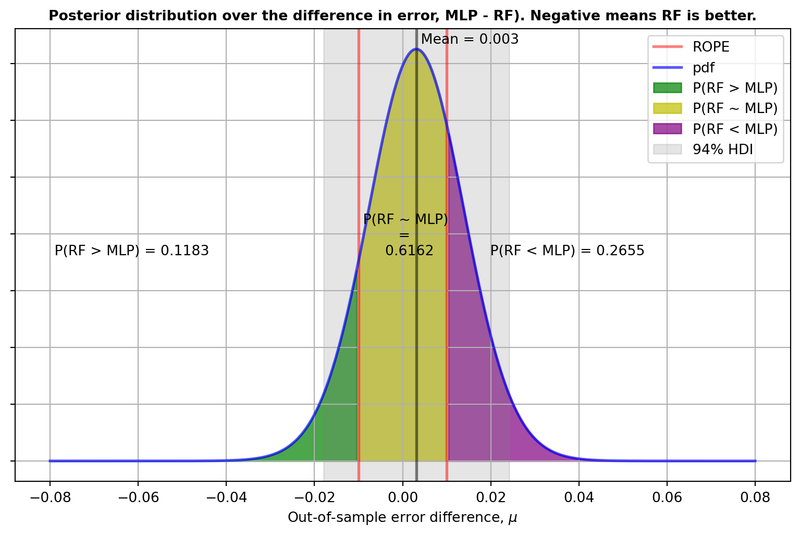

from time import perf_counter
import matplotlib.pyplot as plt
import numpy as np
from scipy import stats
from sklearn.datasets import make_moons
from sklearn.model_selection import RepeatedStratifiedKFold
from sklearn.neural_network import MLPClassifier
from sklearn.ensemble import RandomForestClassifier
from sklearn.metrics import f1_scoreBayesian comparison of cross-validated algorithms
Model selection via a Bayesian correlated t-test.
ML
Theory
Model evaluation
Bayesian
Cross-validation
Robust model evaluation should be second nature for those of us that work with data and predictive models. When determining whether one model is better than another, there are many techniques that one can use. Very common ones include bootstrapping and cross-validation.
First and foremost however, one must make a decision as to what “better” means. Better in what way? More accurate? Faster? More (budget) efficient? We will revisit this later. For now, let’s assume that better means “obtains a higher F1 score”. F1 is just an example, and we could consider any other score. Once we have decided to say that the model with the highest F1 score is better, the more serious question arises: how do we know whether a model is indeed better? Can we just take an average score across a test set and compare the numbers, i.e. plain-old pointwise comparison? I think we agree that we would like something more robust and which, ideally, takes uncertainty into account.
We ideally want to have a probability distribution which informs us, in some way, what the probability of one model being better than the other is. That is, we want something like \(P(M_1 > M_2 | D)\), where \(M_1 > M_2\) denotes that model \(M_1\) is better than model \(M_2\) and \(D\) is the data used for the comparison. In fact, we may want to do more than that. Ideally, we would like a distribution over the true performance difference of the two algorithms. What a great motive to enter the wonderful world of Bayesian modelling1.
1 See, e.g. Kruske (2013), for a nice, rapid tour of Bayesian modelling for group comparisons.
Problem statement
Assume that we are interested in comparing the performance (e.g. accuracy, recall, precision, \(\text{F}_{\beta}\), etc.) of two predictors. If using cross-validation, Bouckaert (2003) recommends making this more robust (i.e. returning more stable statistics) by using repeated cross-validation; that is performing evaluation via \(m\) repetitions of \(k\)-fold cross-validation. Both classifiers will be trained on the same data and tested on the same data and we can therefore collect the differences of their performances
\[ \delta = \{\delta_{1}, \delta_{2},. . ., \delta_{n}\} \]
where \(n=mk\). Denote the sample mean and sample variance of the differences as \(\hat{\delta}\) and \(\hat{\sigma}^{2}\).
What can we say about these samples? Well, one thing is that these samples are almost certainly noisy observations of an underlying true difference of performance between the two algorithms. That is, there exist a hidden performance difference which we don’t know but that manifest itself, with noise, through these samples. For instance, if we assume that the \(\delta_{i}\) s are i.i.d. then we could say that the \(\delta_{i}\) are samples from a distribution with a true underlying mean, which would be the mean of interest to us. We could then further assign a prior distribution to that true mean (and any other parameters in the specification of the sampling distribution) and, after observing some samples, perform inference to construct the posterior distribution over the true mean, given the observed data. This is the standard paradigm of Bayesian modelling.
There are infinite ways to model such a process but we can follow the aphorism, gifted to us by George Box, that none of them will be correct, but some of them may be useful. In particular, the assumtions that we bake into the model will make the model more or less useful. Oversimplifying assumptions would lead us to a model that is not able to describe the underlying process. Complex interactions would lead to a model that is intractable. Of course these days, with powerful probabilist programming languages, it is much easier to build a complex model and have a black-box inference algorithm that will give us results. This, however, isn’t a free meal. Complex models, especially hierachical ones, lead to complex inference processes that require expertise to diagnose. Moreover, the choce of priors will also become a delicate issue.
In general, we need to balance two things:
- the modelling assumptions,
- the techniques to perform inference, i.e. the computational techniques.
In the case that we are considering here, i.e. comparing models across cross-validation scores, one important modelling aspect is that the scores are not independent: in fact the resulting models will have an overlapping training set and an overlapping testing set.
In this post, we will be presenting a model that was developed in Corani and Benavoli (2015). This is a relatively simple model which uses the properties of exponential families and conjugacy to simplify inference. Note that this is just one possible model of the process, and it is by no means the best model!
Time to code this up!
To see this in action, the first thing we need is some data and repeated cross-validation predictions for two different algorithms.
We use sklearn to make a moons dataset:
X, y = make_moons(n_samples=600, noise=0.4, random_state=23)This has an equal number of labels of each class.
Now that we have the data, let’s run the repeated cross-validation for two models. Here we use a Random Forest and a neural network (MLPClassifier) classifier:
n_repetitions = 10
n_folds = 5
RSKF = RepeatedStratifiedKFold(
n_splits=n_folds, n_repeats=n_repetitions, random_state=23
)
model_1 = "RF"
model_2 = "MLP"
models = {
model_1: RandomForestClassifier(),
model_2: MLPClassifier(alpha=1, max_iter=1_000)
}
model_scores = {}
model_times = {}
for model_name, model in models.items():
times_fit = []
times_predict = []
scores = []
for train_indices, test_indices in RSKF.split(X, y):
X_train, X_test = X[train_indices], X[test_indices]
y_train, y_test = y[train_indices], y[test_indices]
time_start = perf_counter()
clf = model.fit(X_train, y_train)
time_end = perf_counter()
time_fit = time_end - time_start
time_start = perf_counter()
y_pred = clf.predict(X_test)
time_end = perf_counter()
time_predict = time_end - time_start
f1 = f1_score(y_test, y_pred)
times_fit.append(time_fit)
times_predict.append(time_predict)
scores.append(f1)
model_scores[model_name] = np.asarray(scores)
model_times[model_name] = {
"fit": times_fit,
"predict": times_predict
}Now that we have the scores for each model, let’s perform the test. We’ll first need to compute the array of differences, \(\delta\), and then we’re in business.
# * create array of differences; we do model_2 (MLP) - model_1 (RF)
delta = model_scores[model_2] - model_scores[model_1]Code for compute_statistics
def compute_statistics(
perf_differences, n_repetitions,
):
"""
Given the m*k length array holding the scores for the m-repetitions of k-folds, will compute
the following statistics: the mean, the Nadeau-Bengio corrected
variance and the number of degrees of freedom for the t-distribution.
"""
mean = np.mean(perf_differences)
variance = np.var(perf_differences, ddof=1)
# * Now account for the correlations across measurements with the
# * Nadeau-Bengio correction of variance
num_of_measurements = perf_differences.size
correlation = n_repetitions / num_of_measurements
variance *= 1 / num_of_measurements + correlation / (1 - correlation)
return mean.item(), variance.item(), num_of_measurements - 1# * obtain the relevant statistics
mean, variance, dof = compute_statistics(
perf_differences=delta, n_repetitions=n_repetitions
)t-distribution statistics:
mean 0.00451990557326873,
variance 0.00015217969221592226,
degrees of freedom 49.One useful thing we can do is to select a region of practical equivalence, ROPE. This is a region where the difference in performance can be considered practically equivalent, i.e. a difference lying within the ROPE is an inconsequential difference. Clearly the choice of ROPE is subjective and will depend on the metric and the scale we use to compare the algorithms in addition to our understanding of equivalence in the given situation. See Kruske (2013) and Benavoli et al. (2017) for more details.
Here we will say that a difference of 1% in performance between the two models makes the performance practically equivalent.
Code for get_posteriors_from_t_distribution
def get_posteriors_from_t_distribution(
mean, variance, dof, rope=(0.0, 0.0), precision=4
):
"""Compute and return probability mass to the left of the given rope,
within the given rope and to the right of the given rope for a
t-distribution specified by the given mean, variance and degrees
of freedom.
NB: probabilities are computed from the cumulative Student distribution, not
from a sampled posterior.
"""
# * Deal with the situation where the variance is very small by assigning entire
# * probability mass to the appropriate regions
if np.isclose(variance, 0.0):
prob_left = float(mean < rope[0])
prob_right = float(mean > rope[1])
# * Otherwise compute the probability for the specified t-distribution.
else:
std = np.sqrt(variance)
prob_left = stats.t.cdf(rope[0], dof, loc=mean, scale=std)
prob_right = 1 - stats.t.cdf(rope[1], dof, loc=mean, scale=std)
prob_centre = 1 - prob_left - prob_right
return [round(p, precision) for p in [prob_left, prob_centre, prob_right]]# * Select a Region of practical equivalence:
ROPE = (-0.01, 0.01)
prob_model_1_better, prob_rope, prob_model_2_better = get_posteriors_from_t_distribution(
mean=mean, variance=variance, dof=dof, rope=ROPE
)P(RF > MLP) = 0.1224,
P(RF ~ MLP) = 0.5481,
P(RF < MLP) = 0.3294And what’s nicer, we can look at the distribution as the matching prior returns a posterior that is a t-distribution:

Since the posterior distribution informs us about the relative credibility values across the reals, from the posterior we get the uncertainty in the estimate. From this we can get a whole lot of useful information, for instance the Highest Density Intervals (HDIs), the mode, the mean, etc. Furthermore, equipped with the posterior distribution and the region of practical equivalence we can:
- Estimate the posterior probability of a reasonable null hypothesis, i.e. if the difference in performance is within a couple of percentage points they may well be considered equivalent. This will be given by the area within the rope region, above denoted by \(P(RF \sim MLP | D)\).
- Estimate the posterior probability that one model is better than the other, i.e. \(P(RF > MLP | D)\) and \(P(RF < MLP | D)\). These will be given by the areas on either side of the ROPE.
- Represent effect size and uncertainty.
Cost sensitive decisions
While we will be dealing with this in more detail in a separate blog post, let’s have a first stab.
In the real world, it is usually the case that we want to reason and make decisions about situations based on the concept of cost. The choice of the cost measure should depend on how the system is going to be used, rather than on any inherent specification of the training process. The issue with doing this is that it is hard. It is hard because specifying a cost-aware loss function is non-trivial, because cost-specifications are domain specific, and becuase even in the case of roughly knowing what the costs are, using this information is hard, i.e. the specified weigthed cost may be a difficult objective for optimisers to work with. However if we can specify costs then decision making based on these would be the best way to work as this allows one to take into consideration the utility of the decision that will be made.
In our situation, in order to do cost-sensitive analysis/decision making, all we need is to specify a cost function – we won’t need to run an optimisation on this objective function. This is a function that defines the loss (or cost) we incur in making a given decision (e.g. the wrong decision). A typical example is whether to give more importance to a false positive or a false negative. For our given situation and for the sake of exposition, let’s assume that we are interested in the time taken to fit the model as we will need to do it often. (Also because in our example, the models actually take the same time to predict.) We find that
Median time to fit RF is 0.1138 s,
Median time to fit MLP is 0.7345 s,
Ratio MLP / RF is 6.45That is, MLP is a lot slower to fit than RF. There are three decisions we can make
- RF is better than MLP
- RF is equivalent to MLP
- RF is worse than MLP
We consider the following cost-matrix:
| RF is better | are equivalent | MLP is better | |
|---|---|---|---|
| Choose RF | 0 | -5 | 2 |
| Choose MLP | 7 | 5 | 0 |
where the \((i, j)\)th entry is the cost incurred by making decision \(i\) when \(j\) is correct. Here we have a \(2 \times 3\) matrix as we only consider the options of selecting either one model or the other, no abstention, or anything else.
In this case we have:
- cost of choosing the Random Forest is:
- 0 if it is better,
- -5 if they are equivalent as we save compute time,
- 2 if MLP is better, as we would lose performance
- cost of choosing the MLPClassifier is:
- 7 if RF is better because we pay for computational and performance cost,
- 5 if they are equivalent as we add to the compute time,
- 0 if MLP is indeed better
The expected cost can then be obtained by multiplying the cost matrix with the relevant posterior probabilities. In this case, the relevant probabilities are \(P(RF > MLP | D)\), \(P(RF \sim MLP | D)\) and \(P(RF < MLP | D)\).
cost_matrix = np.array([
[0., -5., 2.],
[7., 5., 0.],
])
probabilities = np.array([
prob_model_1_better,
prob_rope,
prob_model_2_better
])
expected_cost = cost_matrix.dot(probabilities)
Cost of deciding on RF: -2.0817
Cost of deciding on MLP: 3.5973The lowest cost would determine the optimal decision. We see that we would incur a significant cost in choosing MLP over RF. Of course, we could have made things even more extreme by specifying more aggressive costs. And further, we could have extended the possibilities, e.g. adding a row for “no decision made”.
References
Bouckaert, RR. 2003. “Choosing Between Two Learning Algorithms Based on Calibrated Tests.” In ICML, 3:51–58.
Corani, G, and A Benavoli. 2015. “A Bayesian Approach for Comparing Cross-Validated Algorithms on Multiple Data Sets.” Machine Learning 100 (2): 285–304.
Kruske, JK. 2013. “Bayesian Estimation Supersedes the t Test.” Journal of Experimental Psychology: General 142 (2): 573–603.
Nadeau, C, and Y Bengio. 2003. “Inference for the Generalization Error.” Machine Learning 52: 239–81.